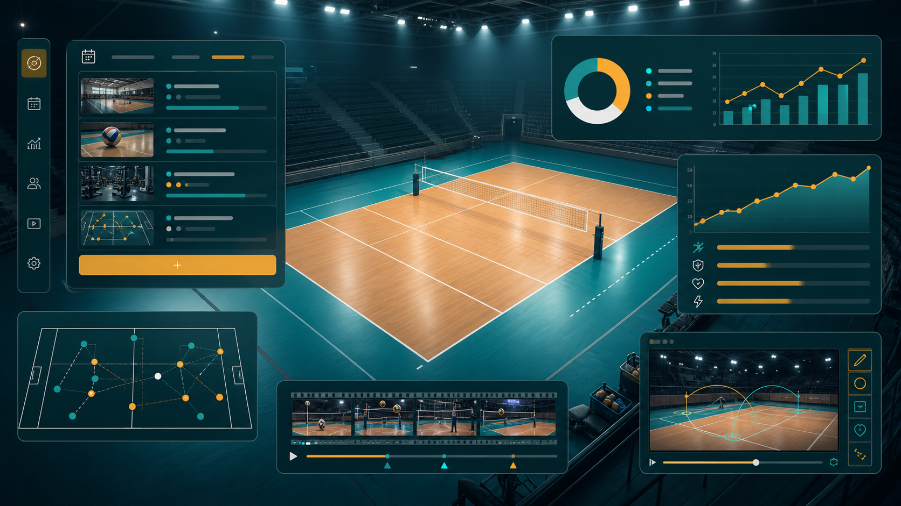

Ideia
Comece pelo que acontece na quadra
Em vez de perguntar "qual tela eu faco?", pergunte "qual decisao de treino eu quero melhorar?". Exemplo: escolher o proximo foco depois de observar recepcao e bloqueio.
Licao 0001
Nesta licao voce aprende a forma mais rapida de evoluir o Projeto Isa sem se perder: pegar uma ideia de volei, transformar em dados simples e mostrar isso em uma tela real.

Ideia
Em vez de perguntar "qual tela eu faco?", pergunte "qual decisao de treino eu quero melhorar?". Exemplo: escolher o proximo foco depois de observar recepcao e bloqueio.
Dados
No codigo, uma sessao de treino vira um objeto com title, style,
focus, quality e notes. Isso e modelagem simples.
Tela
O dashboard pega esses dados e mostra filtros, tabelas e cards. Assim voce ve o app funcionando enquanto aprende componentes, props e estado.
Exemplo: "Qual fundamento mais precisa aparecer no proximo treino?"
Adicionar apenas os campos necessarios para responder a pergunta de hoje.
Uma tabela, card, filtro ou formulario. Pequeno o bastante para testar no mesmo dia.
Guardar o que aprendemos para que voce e outros agentes continuem do ponto certo.
Tente responder antes de abrir a resposta.
E estado: a escolha muda com a interacao e faz a tela renderizar uma lista filtrada. O dominio e o conceito "estilo de treino"; os dados sao os treinos cadastrados.
Para a parte de desenvolvimento, leia a explicacao oficial do React sobre estado como memoria do componente. Para manter o app fiel ao volei, use as regras oficiais da FIVB quando uma regra precisar virar comportamento no sistema.
Se algo ficar confuso, pergunte ao agente. A ideia desta sessao e aprender fazendo, nao decorar tudo de uma vez.
Referencia relacionada: glossario do Projeto Isa.